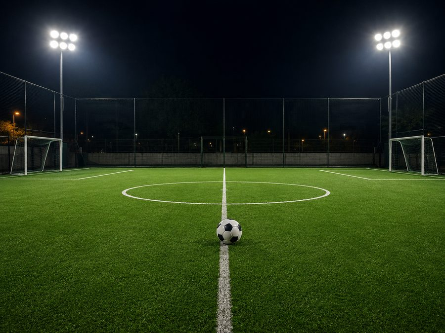

Nosotros
Tu pasión, nuestro campo. Así vivimos el fútbol en GamaSport.
Tres años haciendo que Tegucigalpa juegue
GamaSport nació con una idea sencilla: que cualquier equipo de la ciudad tuviera un lugar seguro y accesible para jugar fútbol 5, sin enredos para reservar. Hoy contamos con dos canchas de grama sintética con iluminación LED para jugar de noche, parqueo privado y un restaurante para rematar el partido como se debe.
Estamos en el Anillo Periférico, frente al Coliseum Nacional de Ingenieros. Por nuestras canchas pasan cada semana equipos de colonias vecinas, estudiantes universitarios y empresas que arman sus torneos con nosotros.
Con nuestra plataforma en línea puedes ver el catálogo, apartar tu hora, inscribir a tu equipo en torneos y pedir del restaurante, todo desde el celular.

Cancha de primera
Grama sintética profesional y luz LED para que el partido no dependa de la hora.
Ambiente seguro
Parqueo privado y un espacio pensado para familias, equipos y empresas.
El tercer tiempo
Restaurante en el sitio: combos, boquitas y bebidas frías para después del juego.
¿Armamos el partido?
Reserva tu cancha en línea y nos vemos en el campo.